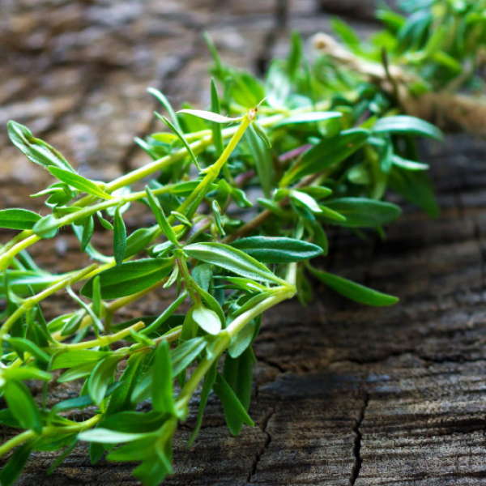

<!DOCTYPE html>
<html lang="en">

<head>
  <meta charset="utf-8">
  <meta content="width=device-width, initial-scale=1.0" name="viewport">

  <title>PAMProjet</title>
  <meta content="" name="description">
  <meta content="" name="keywords">

<!-- links -->
  <link href="https://fonts.googleapis.com/css?family=Open+Sans:300,300i,400,400i,600,600i,700,700i|Raleway:300,300i,400,400i,500,500i,600,600i,700,700i|Poppins:300,300i,400,400i,500,500i,600,600i,700,700i" rel="stylesheet">


  <link href="assets/vendor/animate.css/animate.min.css" rel="stylesheet">
  <link href="assets/vendor/bootstrap/css/bootstrap.min.css" rel="stylesheet">
  <link href="assets/vendor/bootstrap-icons/bootstrap-icons.css" rel="stylesheet">
  <link href="assets/vendor/boxicons/css/boxicons.min.css" rel="stylesheet">
  <link href="assets/vendor/fontawesome-free/css/all.min.css" rel="stylesheet">
  <link href="assets/vendor/glightbox/css/glightbox.min.css" rel="stylesheet">
  <link href="assets/vendor/remixicon/remixicon.css" rel="stylesheet">
  <link href="assets/vendor/swiper/swiper-bundle.min.css" rel="stylesheet">

<!-- styles-->
  <link href="assets/css/style.css" rel="stylesheet">

</head>

<body>

  <!-- ======= Top Bar ======= -->
  <div id="topbar" class="d-flex align-items-center fixed-top">
    <div class="container d-flex justify-content-between">
      <div class="contact-info d-flex align-items-center">
        <i class="bi bi-envelope"></i> <a href="mailto:contact@example.com">PAMProjet@insea.ac.ma</a>
        <i class="bi bi-phone"></i> +212 667788990
      </div>
      <div class="d-none d-lg-flex social-links align-items-center">
        <a href="#" class="twitter"><i class="bi bi-twitter"></i></a>
        <a href="#" class="facebook"><i class="bi bi-facebook"></i></a>
        <a href="#" class="instagram"><i class="bi bi-instagram"></i></a>
        <a href="#" class="linkedin"><i class="bi bi-linkedin"></i></i></a>
      </div>
    </div>
  </div>

  <!-- ======= Header ======= -->
  <header id="header" class="fixed-top">
    <div class="container d-flex align-items-center">
      
      <h1 class="logo me-auto"><a href="index.html">PAMProjet</a></h1>


      <nav id="navbar" class="navbar order-last order-lg-0">
        <ul>
          <li><a class="nav-link scrollto active" href="#Accueil">Accueil</a></li>
          <li><a class="nav-link scrollto" href="#about">About</a></li>
          <li><a class="nav-link scrollto" href="#domaines">domaine</a></li>
          <li><a class="nav-link scrollto" href="#plantes">Plantes</a></li>
          <li><a class="nav-link scrollto" href="#articles">Articles</a></li>
        </ul>
        <i class="bi bi-list mobile-nav-toggle"></i>
      </nav>
    </div>
  </header>
  <!-- End Header -->

  <!-- ======= Accueil Section ======= -->
  <section id="Accueil" class="d-flex align-items-center">
    <div class="container">
      <h1>Bienvenue dans Notre Site</h1>
      <h2>Des Plantes Aromatiques et Médicinales</h2>
      <a href="#about" class="btn-get-started scrollto">Aller Au Site</a>
    </div>
  </section><!-- End Accueil -->

  <main id="main">

    <!-- ======= infos======= -->
    <section id="infos" class="infos">
      <div class="container">

        <div class="row">
          <div class="col-lg-4 d-flex align-items-stretch">
            <div class="content">
              <h3>Notre site</h3>
              <p>
                Ce site est un travail Academic encadre <br> il enveloppe l'ensemble des différentes plantes aromatiques et médicinales les plus Utilises au Monde <br> Surtout dans note Pays le MAROC
              </p>
              <div class="text-center">
                <a href="#about" class="more-btn">Plus d'info<i class="bx bx-chevron-right"></i></a>
              </div>
            </div>
          </div>
          <div class="col-lg-8 d-flex align-items-stretch">
            <div class="icon-boxes d-flex flex-column justify-content-center">
              <div class="row">
                <div class="col-xl-4 d-flex align-items-stretch">
                  <div class="icon-box mt-4 mt-xl-0">
                    <i class="bi bi-flower1"></i>
                    <h4><a href="#">plantes aromatiques</a></h4>
                    <p>Les plantes aromatiques sont un ensemble de plantes utilisées en cuisine et en phytothérapie pour les arômes qu'elles dégagent</p>
                  </div>
                </div>
                <div class="col-xl-4 d-flex align-items-stretch">
                  <div class="icon-box mt-4 mt-xl-0">
                    <i class="bi bi-file-medical"></i>
                    <h4><a href="#">plantes médicinales</a></h4>
                    <p>Une plante médicinale est une plante utilisée pour ses propriétés particulières bénéfiques pour la santé humaine, voire animale.</p>
                  </div>
                </div>
                <div class="col-xl-4 d-flex align-items-stretch">
                  <div class="icon-box mt-4 mt-xl-0">
                    <i class="bx bx-images"></i>
                    <h4><a href="#gallery">Gallery</a></h4>
                    <p>Pour plus de clarite vous pouvez allez au gallery des images</p>
                  </div>
                </div>
              </div>
            </div>
          </div>
        </div>

      </div>
    </section>

    <!-- ======= About Section ======= -->
    <section id="about" class="about">
      <div class="container-fluid">

        <div class="row">
          <div class="col-xl-5 col-lg-6 video-box d-flex justify-content-center align-items-stretch position-relative">
            <a href="https://www.youtube.com/watch?v=Wq9KKuuJUnM" class="glightbox play-btn mb-4"></a>
          </div>

          <div class="col-xl-7 col-lg-6 icon-boxes d-flex flex-column align-items-stretch justify-content-center py-5 px-lg-5">
            <h3>Les plantes Aromatiques et medicenales</h3>
            <p>De nos jours, entre 20.000 et 25.000 plantes sont utilisées dans la pharmacopée humaine. 75% des médicaments ont une origine végétale et 25% 
              d’entre eux contiennent au moins une molécule active d’origine végétale. <br>
              Les extractions de différents produits se font sous différentes formes dont 
              les plus importantes sont : les tisanes, la gélule de la plante, les suspensions intégrales de plantes fraîches, les teintures mères, les macérâts glycérinés et les huiles essentielles. 
              <br> Les grands types de plantes aromatiques et médicinales utiles à l’homme 
              peuvent être définis par leur principal usage. On peut citer :
              <br> -> plantes pour tisanes, boissons hygiéniques et d’agrément, 
             <br> -> plantes à usages cosmétiques, 
             <br> -> plantes à usages aromatiques et condimentaires, 
             <br> -> plantes à usages alimentaires, 
             <br> -> plantes à usages industriels, 
             <br> -> plantes médicinales.</p>

            <div class="icon-box">
              <div class="icon"><i class="bi bi-info-circle-fill"></i></div>
              <h4 class="title"><a href="">EN EUROPE</a></h4>
              <p class="description">Le commerce mondial des plantes 
                aromatiques et médicinales (matériel 
                végétal) est évalué à près de 0.5 million 
                de tonnes pour une valeur qui avoisine 
                1,2 milliards d’Euros. Cinq pays 
                européens font partie des 12 plus grands 
                pays importateurs au monde des PAM: 
                l'Allemagne, l'Espagne, la France, l'Italie et 
                le Royaume-Uni.</p>
            </div>

            <div class="icon-box">
              <div class="icon"><i class="bi bi-info-circle-fill"></i></i></div>
              <h4 class="title"><a href="">AU MAROC</a></h4>
              <p class="description">Par ses contrastes géographiques, le Maroc offre une gamme variée de bioclimats 
                permettant l’installation d’une flore riche 
                (plus de 4200 espèces) et une diversité de 
                ressources phylogénétiques en PAM (600 
                espèces). A coté de ce contexte naturel 
                prometteur, le Maroc dispose d’un savoir-faire ancestral : la médication par les 
                plantes, leur utilisation pour l’aromatisation et la conservation des aliments, ainsi 
                que pour l’extraction des principes aromatiques destinés à la parfumerie familiale 
                ou au marché.
              <br>
              La production des PAM met en exploitation aussi bien des plantes spontanées 
              que des plantes séchées pour les besoins 
              d’herboristerie et les aromates alimentaires. Plus d’une vingtaine d’espèces sont 
              utilisées pour la production d’huiles essentielles ou d’autres extraits aromatiques 
              destinés essentiellement à l’industrie de 
              parfumerie et cosmétique ainsi que pour 
              la préparation des produits d’hygiène et la 
              formulation des arômes. </p>
            </div>

          </div>
        </div>

      </div>
    </section>

    <section id="counts" class="counts">
      <div class="container">

        <div class="row">

          <div class="col-lg-3 col-md-6">
            <div class="count-box">
              <i class="bi bi-list-ol"></i>
              <span data-purecounter-start="0" data-purecounter-end=" 53237" data-purecounter-duration="3" class="purecounter"></span>
              <p>Nombre des PAMs</p>
              <br>
            </div>
          </div>


          <div class="col-lg-3 col-md-6 mt-5 mt-lg-0">
            <div class="count-box">
              <i class="bi bi-star"></i>
              <span data-purecounter-start="0" data-purecounter-end="4200" data-purecounter-duration="2" class="purecounter"></span>
              <p>Au Maroc</p>
              <br>
            </div>
          </div>

          <div class="col-lg-3 col-md-6 mt-5 mt-md-0">
            <div class="count-box">
              <i class="bi bi-cash-stack"></i>
              <span data-purecounter-start="0" data-purecounter-end="5300" data-purecounter-duration="1" class="purecounter"></span>
              <p>million de dirhams de revenue</p>
              <br>
            </div>
          </div>

          <div class="col-lg-3 col-md-6 mt-5 mt-lg-0">
            <div class="count-box">
              <i class="bi bi-list-ol"></i>
              <span data-purecounter-start="0" data-purecounter-end="400" data-purecounter-duration="1" class="purecounter"></span>
              <p>espèces sont reconnues pour leur usage médicinal et/ou aromatique</p>
            </div>
          </div>

        </div>

      </div>
    </section>

    <!-- ======= domaine Section ======= -->
    <section id="domaines" class="domaines">
      <div class="container">

        <div class="section-title">
          <h2>domaine</h2>
          <p>Cette section contiennent les domaines les plus connues par l'utilisation des PAMs</p>
        </div>

        <div class="row">
          <div class="col-lg-3">
            <ul class="nav nav-tabs flex-column">
              <li class="nav-item">
                <a class="nav-link active show" data-bs-toggle="tab" href="#tab-1">Cuisine</a>
              </li>
              <li class="nav-item">
                <a class="nav-link" data-bs-toggle="tab" href="#tab-2">Medcine</a>
              </li>
              <li class="nav-item">
                <a class="nav-link" data-bs-toggle="tab" href="#tab-3">Cosmétologie</a>
              </li>
              <li class="nav-item">
                <a class="nav-link" data-bs-toggle="tab" href="#tab-4">Boissons</a>
              </li>
            </ul>
          </div>
          <div class="col-lg-9 mt-4 mt-lg-0">
            <div class="tab-content">
              <div class="tab-pane active show" id="tab-1">
                <div class="row">
                  <div class="col-lg-8 details order-2 order-lg-1">
                    <h3>Cuisine</h3>
                    <p class="fst-italic">Si les plantes médicinales sont connues pour leurs bienfaits sur la santé, elles font aussi des merveilles en cuisine. Voici 7 plantes médicinales dont l’arôme et les couleurs feront le plaisir des yeux et des papilles.</p>
                    <p>Le basilic, Pesto, Le laurier,  Le romarin, L’ail, Le curcuma, L’estragon, Le poivre noir</p>
                  </div>
                  <div class="col-lg-4 text-center order-1 order-lg-2">
                    
                  </div>
                </div>
              </div>
              <div class="tab-pane" id="tab-2">
                <div class="row">
                  <div class="col-lg-8 details order-2 order-lg-1">
                    <h3>Medcine</h3>
                    <p class="fst-italic">Si la médecine par les plantes connaît un engouement extraordinaire à travers le monde, il 
                      est impossible de ne voir là qu’un phénomène de mode. Bien sûr, notre époque est 
                      profondément marquée par la recherche d’une vie plus saine, d’un retour à la nature, aux 
                      valeurs essentielles. </p>
                    <p>Mais le succès de la Phytothérapie s’explique avant tout par le niveau de 
                      maîtrise technique et scientifique que l’on atteint désormais dans ce domaine. L’agronomie, la 
                      chimie, la pharmacologie ont permis, en progressant, de mettre au point des formes 
                      thérapeutiques et galéniques plus sûres, plus adaptées, et plus efficaces.</p>
                  </div>
                  <div class="col-lg-4 text-center order-1 order-lg-2">
                    
                  </div>
                </div>
              </div>
              <div class="tab-pane" id="tab-3">
                <div class="row">
                  <div class="col-lg-8 details order-2 order-lg-1">
                    <h3>Cosmétologie</h3>
                    <p class="fst-italic">Certaines aromatiques contiennent des huiles essentielles utilisées en parfumerie : le basilic, la lavande, la marjolaine, la menthe, la mélisse, le romarin, la sauge, la verveine. </p>
                    <p>Elles entrent souvent dans les compositions herbacées, fougères ou épicées. Elles peuvent apporter du tonique, du fruité selon les molécules odorantes, qu’elles contiennent.</p>
                  </div>
                  <div class="col-lg-4 text-center order-1 order-lg-2">
                    
                  </div>
                </div>
              </div>
              <div class="tab-pane" id="tab-4">
                <div class="row">
                  <div class="col-lg-8 details order-2 order-lg-1">
                    <h3>Boissons</h3>
                    <p class="fst-italic">Des plantes aromatiques entrent dans la composition de boissons variées comme les tisanes, sirops ou boissons alcoolisées. </p>
                    <p>Par exemple l'hysope est un ingrédient du pastis, de l'eau de mélisse, de l'absinthe suisse, et surtout de l'élixir de la Grande-Chartreuse et de la bénédictine</p>
                  </div>
                  <div class="col-lg-4 text-center order-1 order-lg-2">
                    
                  </div>
                </div>
              </div>
            </div>
          </div>
        </div>

      </div>
    </section><!-- End domaine Section -->

    <!-- ======= plantes Section ======= -->
    <section id="plantes" class="plantes">
      <div class="container">

        <div class="section-title">
          <h2>plantes</h2>
          <p>Dans cette section vous allez touver les plantes medicinales et aromatiques les plus connues</p>
        </div>

        <div class="row">

          <div class="col-lg-6">
            <div class="member d-flex align-items-start">
              <div class="pic"></div>
              <div class="member-info">
                <h4>Aneth</h4>
                <span>anethum graveolens</span>
                <p>Feuilles très découpées, fines, filiformes, 
                  de couleur bleutée. <br>
                  Usage culinaire : salades, poissons, 
                  viandes et sauces.</p>
              </div>
            </div>
          </div>

          <div class="col-lg-6 mt-4 mt-lg-0">
            <div class="member d-flex align-items-start">
              <div class="pic"></div>
              <div class="member-info">
                <h4>Estragon</h4>
                <span>artemisia dracunculus</span>
                <p>Feuilles longues, étroites, fines, élancées, 
                  très parfumées, au goût anisé. <br>
                  Usage culinaire : vinaigre aromatisé, 
                  viande blanche, sauce ravigote, crapaudine, béarnaise.</p>
              </div>
            </div>
          </div>

          <div class="col-lg-6 mt-4">
            <div class="member d-flex align-items-start">
              <div class="pic"></div>
              <div class="member-info">
                <h4>Basilic, pistou</h4>
                <span>ocimum basilicum</span>
                <p>Feuilles vert clair, ovales, gaufrées, au 
                  d'origan et de citron très subtil. <br>
                  Usage culinaire : salade de tomates, sauce 
                  pistou, pâtes, sauce tomate.</p>
              </div>
            </div>
          </div>

          <div class="col-lg-6 mt-4">
            <div class="member d-flex align-items-start">
              <div class="pic"></div>
              <div class="member-info">
                <h4>Fenouil</h4>
                <span>foeniculum vulgare</span>
                <p>Feuilles duveteuses filiformes vertes ou 
                  brunes, goût anisé. <br>
                  Usage culinaire : salade de pommes de 
                  terre, poisson.</p>
              </div>
            </div>
          </div>
          <div class="col-lg-6 mt-4">
            <div class="member d-flex align-items-start">
              <div class="pic"></div>
              <div class="member-info">
                <h4>Cerfeuil</h4>
                <span>anthriscus cerefolium</span>
                <p>Feuilles très tendres, finement divisées, 
                  vert printemps. <br>
                  Usage culinaire : sauce, salade, soupe, 
                  omelettes</p>
              </div>
            </div>
          </div>
          <div class="col-lg-6 mt-4">
            <div class="member d-flex align-items-start">
              <div class="pic"></div>
              <div class="member-info">
                <h4>Laurier</h4>
                <span>laurus nobilis</span>
                <p>Arbuste, feuillage allongé brillant ,vert 
                  foncé, très aromatique, au goût un peu 
                  amer. <br>
                  Usage culinaire : bouquet garni, gratin de 
                  pommes de terre, marinade, bouillons</p>
              </div>
            </div>
          </div>
          <div class="col-lg-6 mt-4">
            <div class="member d-flex align-items-start">
              <div class="pic"></div>
              <div class="member-info">
                <h4>Ciboulette</h4>
                <span>allium schoenoprasum</span>
                <p>Feuilles fines longues comme une touffe 
                  d'herbes ; fleurs en pompon rose au goût 
                  léger d'oignon. <br>
                  Usage culinaire : salade, omelette, fromage blanc.</p>
              </div>
            </div>
          </div>
          <div class="col-lg-6 mt-4">
            <div class="member d-flex align-items-start">
              <div class="pic"></div>
              <div class="member-info">
                <h4>Livèche, céleri vivace, persil d'amour</h4>
                <span>levisticum officinale</span>
                <p>Feuilles tripennées portées par des tiges 
                  robustes au goût proche du céleri, mais 
                  plus délicat. <br>
                  Usage culinaire : court bouillon, salade, 
                  ragoût, viande en sauce.</p>
              </div>
            </div>
          </div>
          <div class="col-lg-6 mt-4">
            <div class="member d-flex align-items-start">
              <div class="pic"></div>
              <div class="member-info">
                <h4>Coriandre</h4>
                <span>coriandrum sativum</span>
                <p>Plante vivace à la feuille dentelée, rappelant celle du cerfeuil.  Goût frais et très 
                  particulier. <br>
                  Connu aussi sous le nom de Persil arabe, 
                  la coriandre entre traditionnellement 
                  dans la composition de nombreuses 
                  recettes de la cuisine du Maghreb ou en 
                  Asie. Elle fait merveille avec poissons ou 
                  fruits de mer crus, préparés en carpaccio 
                  ou tartare et rehausse subtilement salades 
                  et crudités.</p>
              </div>
            </div>
          </div>
          <div class="col-lg-6 mt-4">
            <div class="member d-flex align-items-start">
              <div class="pic"></div>
              <div class="member-info">
                <h4>Marjolaine</h4>
                <span>origanum majorana</span>
                <p>Feuille ronde, petite, vert clair. Goût 
                  chaud et poivré, proche du basilic mais 
                  plus prononcé. <br>
                  Usage culinaire : daube, ragoût, sauce 
                  tomate, marinade, soupe, salade.</p>
              </div>
            </div>
          </div>
          <div class="col-lg-6 mt-4">
            <div class="member d-flex align-items-start">
              <div class="pic"></div>
              <div class="member-info">
                <h4>Mélisse citronnelle</h4>
                <span>melissa officinalis</span>
                <p>Feuillage vert clair, un peu comme celui 
                  de la menthe. <br>
                  Usage culinaire : boissons rafraîchissantes, en hachis pour aromatiser salades 
                  et soupes.</p>
              </div>
            </div>
          </div>
          <div class="col-lg-6 mt-4">
            <div class="member d-flex align-items-start">
              <div class="pic"></div>
              <div class="member-info">
                <h4>Origan</h4>
                <span>origanum vulgare</span>
                <p>C'est la marjolaine à l'état sauvage, mêmes 
                  petites feuilles, plus foncées  et tige rouge. 
                  Goût chaud et poivré, légèrement camphré. <br>
                  Usage culinaire : salade de tomate, sauce 
                  tomate, daube, ragoût, farce.</p>
              </div>
            </div>
          </div>

          <div class="col-lg-6 mt-4">
            <div class="member d-flex align-items-start">
              <div class="pic"></div>
              <div class="member-info">
                <h4>Pimprenelle</h4>
                <span>poterium sanguisorba</span>
                <p>Touffe acaule, feuilles composées de nombreuses folioles dentées au parfum poivré, 
                  au goût de concombre. <br>
                  Usage culinaire : hachée pour aromatiser 
                  les salades.</p>
              </div>
            </div>
          </div>
          <div class="col-lg-6 mt-4">
            <div class="member d-flex align-items-start">
              <div class="pic"></div>
              <div class="member-info">
                <h4>Oseille</h4>
                <span>rumex acetosa</span>
                <p>Feuille ovale, en forme de cœur, grande 
                  comme la main au goût frais et acidulé. <br>
                  Usage culinaire : cake salé, omelette, 
                  potage, poisson.</p>
              </div>
            </div>
          </div>
          <div class="col-lg-6 mt-4">
            <div class="member d-flex align-items-start">
              <div class="pic"></div>
              <div class="member-info">
                <h4>Sarriette</h4>
                <span>satureja hortensis</span>
                <p>Feuilles vert foncé petites pointues au 
                  goût aillé, poivré. <br>
                  Usage culinaire : cuisson des légumes secs 
                  dont elle favorise la digestion.</p>
              </div>
            </div>
          </div>
          <div class="col-lg-6 mt-4">
            <div class="member d-flex align-items-start">
              <div class="pic"></div>
              <div class="member-info">
                <h4>Thym</h4>
                <span>thymus vulgaris</span>
                <p>Feuilles petites, pointues grisâtres au goût 
                  chaud et camphré. <br>
                  Usage culinaire : bouquet garni, marinade, sauce tomate, grillades, sablés, 
                  confiserie.</p>
              </div>
            </div>
          </div>
        </div>

      </div>
    </section><!-- End plantes Section -->

    <!-- ======= Frequently Asked Questions Section ======= -->
    <section id="faq" class="faq section-bg">
      <div class="container">

        <div class="section-title">
          <h2>Les Questions Les plus Fréquentes</h2>
          <p>Cette section est pour les Questions les plus Fréquentes et leurs reponses</p>
        </div>

        <div class="faq-list">
          <ul>
            <li data-aos="fade-up">
              <i class="bx bx-help-circle icon-help"></i> <a data-bs-toggle="collapse" class="collapse" data-bs-target="#faq-list-1">Qu'est-ce qu'une épice / un aromate / un condiment ?<i class="bx bx-chevron-down icon-show"></i><i class="bx bx-chevron-up icon-close"></i></a>
              <div id="faq-list-1" class="collapse show" data-bs-parent=".faq-list">
                <p>
                  On appelle “épice” une substance aromatique et végétale servant à l’assaisonnement des mets (dictionnaire Larousse). Elle peut être issue de toutes les parties de la plante : feuille, graine, racine, fleur…
                  D’une grande puissance aromatique, les épices s’utilisent en faible quantité dans les préparations culinaires. Elles ont souvent une connotation exotique.

                  Le terme “aromate” désigne plus largement une substance aromatique utilisée pour donner du goût et de l’arôme aux aliments. Elle n’est pas toujours d’origine végétale.

                  Enfin, le terme “condiment” est encore plus large, car il comprend des mélanges d’épices ou aromates, ainsi que des substances minérales comme le sel.
                </p>
              </div>
            </li>

            <li data-aos="fade-up" data-aos-delay="100">
              <i class="bx bx-help-circle icon-help"></i> <a data-bs-toggle="collapse" data-bs-target="#faq-list-2" class="collapsed">Qu'est-ce qu'une plante médicinale ?
                <i class="bx bx-chevron-down icon-show"></i><i class="bx bx-chevron-up icon-close"></i></a>
              <div id="faq-list-2" class="collapse" data-bs-parent=".faq-list">
                <p>
                  Une “plante médicinale” est une plante utilisée dans un objectif de santé, qu’il s’agisse de traitement curatif ou préventif. En réalité, la plupart des plantes ont des vertus médicinales, mais ces dernières sont souvent peu étudiées, ou très souvent oubliées. Certaines sont aussi très toxiques, alors surtout ne consommez pas une plante si vous n’êtes pas certains de son identité et de son absence de toxicité !                </p>
              </div>
            </li>

            <li data-aos="fade-up" data-aos-delay="200">
              <i class="bx bx-help-circle icon-help"></i> <a data-bs-toggle="collapse" data-bs-target="#faq-list-3" class="collapsed">Combien de temps puis-je conserver mes épices / mes plantes ?
                <i class="bx bx-chevron-down icon-show"></i><i class="bx bx-chevron-up icon-close"></i></a>
              <div id="faq-list-3" class="collapse" data-bs-parent=".faq-list">
                <p>
                  Les épices et plantes à tisanes étant des produits secs, leur conservation peut être assez longue dans de bonnes conditions : à l’abri de l’humidité et de la lumière, à une température fraîche et constante.

                  Nous indiquons sur chaque emballage la Date de Durabilité Minimale (DDM), au-delà de laquelle les qualités organoleptiques des produits ne sont plus garanties. Mais il ne s’agit pas d’une date au-delà de laquelle le produit ne sera plus consommable.

                  Après ouverture, conservez vos plantes dans les mêmes conditions optimales. Vous vous rendrez rapidement compte à partir de quand le goût de vos produits commence à décroître. Ce délai est variable selon les produits et vos conditions de conservation.

                  Ne conservez pas vos épices en poudre des années…

                  Et si vous êtes adeptes de l’ultra-fraîcheur, nous avons d’excellents moulins à épices pour les broyer vous-même juste au moment de les utiliser !</p>
              </div>
            </li>

            <li data-aos="fade-up" data-aos-delay="300">
              <i class="bx bx-help-circle icon-help"></i> <a data-bs-toggle="collapse" data-bs-target="#faq-list-4" class="collapsed">Comment utiliser les plantes aromatiques et médicinales ?
 <i class="bx bx-chevron-down icon-show"></i><i class="bx bx-chevron-up icon-close"></i></a>
              <div id="faq-list-4" class="collapse" data-bs-parent=".faq-list">
                <p>
                  Nous sommes évidemment convaincus que les plantes sont précieuses pour nous aider à rester en bonne santé.
                  Les allégations nutritionnelles et de santé sont réglementées et nous ne sommes pas libres de communiquer sur ce sujet autant que nous le souhaitons. Nous indiquons les allégations de santé autorisées par l’Union Européenne. Pour le reste, vous trouverez des informations sur internet, mais soyez très vigilants et ne vous fiez pas au premier site venu.

                  Les modalités de préparation des plantes sont très nombreuses, selon les usages et résultats attendus : infusion, décoction, cataplasme, macération…                </p>
              </div>
            </li>

            <li data-aos="fade-up" data-aos-delay="400">
              <i class="bx bx-help-circle icon-help"></i> <a data-bs-toggle="collapse" data-bs-target="#faq-list-5" class="collapsed">Comment utiliser les épices ?
<i class="bx bx-chevron-down icon-show"></i><i class="bx bx-chevron-up icon-close"></i></a>
              <div id="faq-list-5" class="collapse" data-bs-parent=".faq-list">
                <p>
                  Entières, en poudre, cuites ou crues, les épices en cuisine s’utilisent de très nombreuses façons.
                  Nous vous donnons plein d’idées sur notre site, avec un très grand nombre de recettes dans la partie “En cuisine”.
                </p>
              </div>
            </li>

          </ul>
        </div>

      </div>
    </section><!-- End Frequently Asked Questions Section -->

    <!-- ======= articles Section ======= -->
    <section id="articles" class="articles">
      <div class="container">

        <div class="articles-slider swiper" data-aos="fade-up" data-aos-delay="100">
          <div class="swiper-wrapper">

            <div class="swiper-slide">
              <div class="article-wrap">
                <div class="article-item">
                  <p>
                    <i class="bx bxs-quote-alt-left quote-icon-left"></i>
                    La filière des plantes aromatiques et médicinales (PAM) au Maroc regorge de potentiel grâce à la diversité des espèces. Ainsi, plus de 4.200 espèces ont été identifiées dont 800 endémiques et 600 classées comme produits à usage médicinal et/ou aromatique, ce qui lui a permis d'être classé deuxième mondialement après la Turquie (Selon l'Agence Nationale des Plantes Médicinales et Aromatiques, 2021).

                    Les productions annuelles sont arrivées à 140.000 tonnes tout en procurant des revenus alternatifs aux communautés locales, générant en moyenne quelque 500.000 journées de travail/an (Selon l'Agence Nationale des Plantes Médicinales et Aromatiques, 2021).
                    <i class="bx bxs-quote-alt-right quote-icon-right"></i>
                  </p>
                </div>
              </div>
            </div><!-- End article item -->

            <div class="swiper-slide">
              <div class="article-wrap">
                <div class="article-item">
                  <p>
                    <i class="bx bxs-quote-alt-left quote-icon-left"></i>
                    Actuellement, le Maroc est classé 12ème exportateur mondial des PAM avec 52.000 tonnes de plantes et 5.000 tonnes d'huiles. Les principales destinations des exportations marocaines en PAM sont le marché de l'UE et les Etats Unis, mais l'ouverture sur d'autres destinations (Japon, Canada, Suisse, Espagne, Allemagne) a permis d'augmenter les volumes (Selon l'Agence Nationale des Plantes Médicinales et Aromatiques, 2021)
                    <i class="bx bxs-quote-alt-right quote-icon-right"></i>
                  </p>
                </div>
              </div>
            </div><!-- End article item -->

            <div class="swiper-slide">
              <div class="article-wrap">
                <div class="article-item">
                  <p>
                    <i class="bx bxs-quote-alt-left quote-icon-left"></i>
                    Depuis l'année 2005, les exportations marocaines des PAM connaissent une augmentation importante. Ainsi, la valeur des exportations de PAM est passée de 67 MDH en 2002 à 233 MDH en 2014. La valeur des exportations des HE quant à elle est passée de 62 MDH en 2005 à 139 MDH en 2014. En 2017, cette valeur à passer à près de 280 millions de DH. Selon le Département des Eaux et Forêts, les exportations de PAM pourraient atteindre 500 millions de DH à l'horizon 2030.
                    <i class="bx bxs-quote-alt-right quote-icon-right"></i>
                  </p>
                </div>
              </div>
            </div><!-- End article item -->

            <div class="swiper-slide">
              <div class="article-wrap">
                <div class="article-item">
                  <p>
                    <i class="bx bxs-quote-alt-left quote-icon-left"></i>
                    Le secteur des PAM au Maroc se caractérise par la présence d'un grand nombre d'unités de production de petites et moyennes tailles et qui, pour la plupart, ont vu le jour ces trois dernières décennies. Il s'agit principalement :

                    Des sociétés étrangères ou filiales de groupes étrangers spécialisées dans la production de molécules naturelles, d'infusettes et dérivés de PAM et dont le nombre est réduit à quelques unités ;
                    Des sociétés agro-industrielles marocaines qui essayent de couvrir tous les maillons de la filière depuis la culture passant par la transformation jusqu'à la commercialisation. Leur nombre est également limité et elles sont basées généralement dans les grandes agglomérations (Casablanca, Marrakech) ;
                    Des sociétés spécialisées dans la commercialisation des plantes séchées que ce soit de culture (verveine, bouton de roses, fleur d'oranger, sauge, feuille de vigne rouge, feuille d'olivier, fleur de cactus, racine d'iris, …) ou spontanées (romarin, myrte, menthe pouliot, mauve, ...) ;
                    Des sociétés spécialisées dans l'extraction des huiles essentielles et extraits aromatiques.
                    <i class="bx bxs-quote-alt-right quote-icon-right"></i>
                  </p>
                </div>
              </div>
            </div><!-- End article item -->

            <div class="swiper-slide">
              <div class="article-wrap">
                <div class="article-item">
                  <p>
                    <i class="bx bxs-quote-alt-left quote-icon-left"></i>
                    Le Département des Eaux et Forêts a mis en place, depuis 2009, une stratégie de développement de la filière qui repose sur plusieurs piliers, à savoir :

                    La consolidation des connaissances actuelles et leur développement pour aborder de manière professionnelle le marché. C'est à ce titre que le Département des Eaux et Forêts, en collaboration avec le PNUD, a préparé un plan décennal 2015/2024 comprenant la mise en place d'une cartographie nationale des ressources en PAM, ainsi qu'une échelle de priorité par rapport aux espèces les plus importantes ;
                    L'optimisation de la production et de la commercialisation en vue d'une meilleure valorisation des PAM marocaines ;
                    La réglementation, l'organisation et l'encouragement du secteur pour préparer un cadre à la fois adéquat et stimulant pour les professionnels et protecteur de la ressource ;
                    La promotion et l'animation du secteur tout en créant des synergies positives avec d'autres secteurs ;
                    La promotion des populations locales, la préservation et la gestion durable de la ressource.
                    <i class="bx bxs-quote-alt-right quote-icon-right"></i>
                  </p>
                </div>
              </div>
            </div><!-- End article item -->

          </div>
          <div class="swiper-pagination"></div>
        </div>

      </div>
    </section><!-- End articles Section -->

    <!-- ======= Gallery Section ======= -->
    <section id="gallery" class="gallery">
      <div class="container">

        <div class="section-title">
          <h2>Gallery</h2>
        </div>
      </div>

      <div class="container-fluid">
        <div class="row no-gutters">

          <div class="col-lg-3 col-md-4">
            <div class="gallery-item">
              <a href="assets/img/gallery/gallery-1.jpg" class="galelry-lightbox">
                
              </a>
            </div>
          </div>

          <div class="col-lg-3 col-md-4">
            <div class="gallery-item">
              <a href="assets/img/gallery/gallery-2.jpg" class="galelry-lightbox">
                
              </a>
            </div>
          </div>

          <div class="col-lg-3 col-md-4">
            <div class="gallery-item">
              <a href="assets/img/gallery/gallery-3.jpg" class="galelry-lightbox">
                
              </a>
            </div>
          </div>

          <div class="col-lg-3 col-md-4">
            <div class="gallery-item">
              <a href="assets/img/gallery/gallery-4.jpg" class="galelry-lightbox">
                
              </a>
            </div>
          </div>

          <div class="col-lg-3 col-md-4">
            <div class="gallery-item">
              <a href="assets/img/gallery/gallery-5.jpg" class="galelry-lightbox">
                
              </a>
            </div>
          </div>

          <div class="col-lg-3 col-md-4">
            <div class="gallery-item">
              <a href="assets/img/gallery/gallery-6.jpg" class="galelry-lightbox">
                
              </a>
            </div>
          </div>

          <div class="col-lg-3 col-md-4">
            <div class="gallery-item">
              <a href="assets/img/gallery/gallery-7.jpg" class="galelry-lightbox">
                
              </a>
            </div>
          </div>

          <div class="col-lg-3 col-md-4">
            <div class="gallery-item">
              <a href="assets/img/gallery/gallery-8.jpg" class="galelry-lightbox">
                
              </a>
            </div>
          </div>

        </div>

      </div>
    </section><!-- End Gallery Section -->

  </main><!-- End #main -->

  <!-- ======= Footer ======= -->
  <footer id="footer">

    <div class="footer-top">
      <div class="container">
        <div class="row">

          <div class="col-lg-3 col-md-6 footer-contact">
            <h3>PAMProjet</h3>
            <p>
              ATICHE SOUFYANE <br>
              LAACHIR AYOUB<br>
              INSEA 2020/2021 <br><br>
              <strong>Phone:</strong> +212 667788990<br>
              <strong>Email:</strong> info@insea.ac.ma<br>
            </p>
          </div>

          <div class="col-lg-2 col-md-6 footer-links">
            <h4>Useful Links</h4>
            <ul>
              <li><i class="bx bx-chevron-right"></i><a href="#Accueil">Accueil</a></li>
              <li><i class="bx bx-chevron-right"></i><a href="#about">About</a></li>
              <li><i class="bx bx-chevron-right"></i><a href="#plantes">Plantes</a></li>
              <li><i class="bx bx-chevron-right"></i><a href="#domaines">domaine</a></li>
              <li><i class="bx bx-chevron-right"></i><a href="#articles">Articles</a></li>
            </ul>
          </div>

          <div class="col-lg-3 col-md-6 footer-links">
          </div>

          <div class="col-lg-4 col-md-6 footer-newsletter">
            <h4>Joindre Notre Newsletter</h4>
            <p>pour vous informer de toutes nouveautés sur notre site</p>
            <form action="newsletter.php" method="post" name="inscrire" enctype="multipart/form-data">
              <input type="email" name="email"><input type="submit" value="Subscribe">
            </form>
          </div>

        </div>
      </div>
    </div>

    <div class="container d-md-flex py-4">

      <div class="me-md-auto text-center text-md-start">
        <div class="copyright">
          &copy; Copyright <strong><span>PAMProjet</span></strong>. All Rights Reserved
        </div>
        <div class="credits">
        Designed by LAACHIR AYOUB & ATICHE SOUFYANE
        </div>
      </div>
      <div class="social-links text-center text-md-right pt-3 pt-md-0">
        <a href="#" class="twitter"><i class="bx bxl-twitter"></i></a>
        <a href="#" class="facebook"><i class="bx bxl-facebook"></i></a>
        <a href="#" class="instagram"><i class="bx bxl-instagram"></i></a>
        <a href="#" class="google-plus"><i class="bx bxl-skype"></i></a>
        <a href="#" class="linkedin"><i class="bx bxl-linkedin"></i></a>
      </div>
    </div>
  </footer><!-- End Footer -->

  <div id="preloader"></div>
  <a href="#" class="back-to-top d-flex align-items-center justify-content-center"><i class="bi bi-arrow-up-short"></i></a>


  <script src="assets/vendor/bootstrap/js/bootstrap.bundle.min.js"></script>
  <script src="assets/vendor/glightbox/js/glightbox.min.js"></script>
  <script src="assets/vendor/php-email-form/validate.js"></script>
  <script src="assets/vendor/purecounter/purecounter.js"></script>
  <script src="assets/vendor/swiper/swiper-bundle.min.js"></script>


  <script src="assets/js/main.js"></script>

</body>

</html>